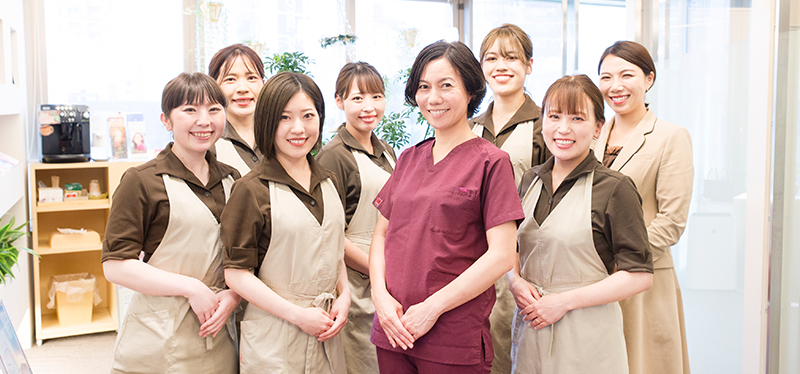
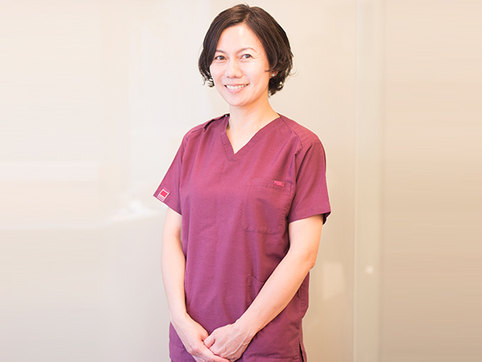
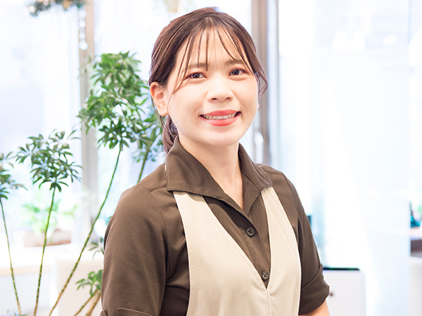
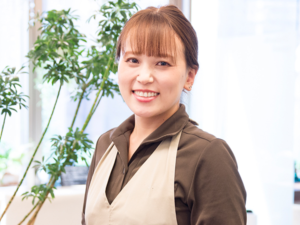
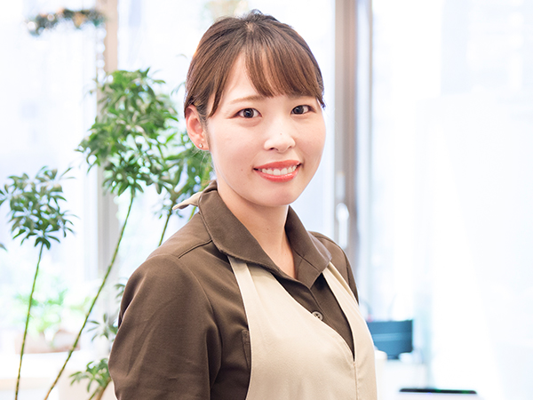
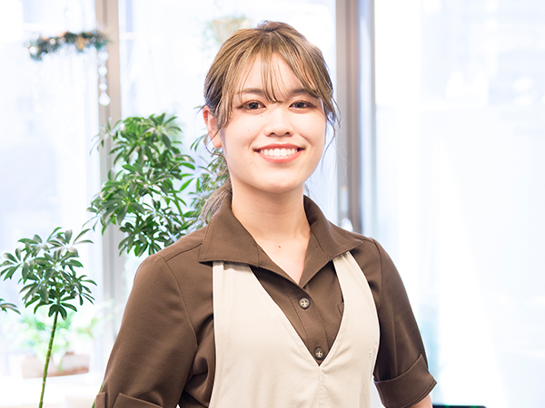
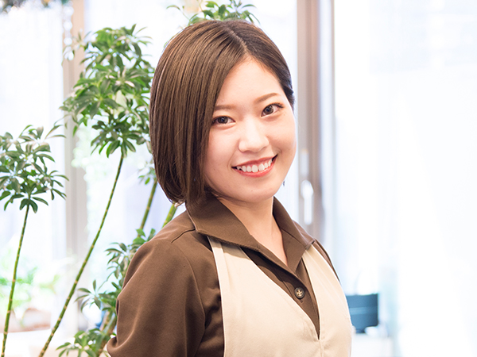
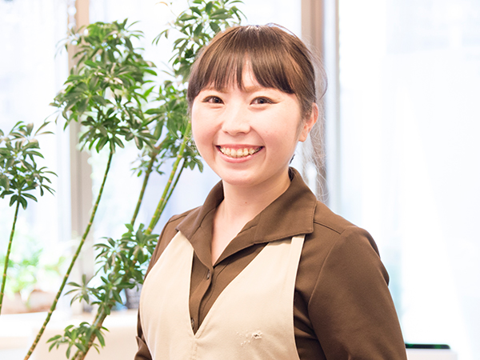

ユミデンタルオフィスの院長・
スタッフ
こちらでは、鹿児島中央駅すぐの歯科医院「ユミデンタルオフィス」の院長とスタッフについてご紹介しています。当院には日本歯周病学会の認定を受けた歯周病専門医や歯周病学会認定歯科衛生士が在籍しており、歯周病治療に特化していることが特徴です。
歯周病学会認定専門医・指導医として
歯周病は年配の方だけがかかる病気ではなく、早ければ10代でも症状が出てきてしまうということをご存じでしょうか？ ユミデンタルオフィスは歯周病に特化した歯科医院として、患者様に歯周病についての正しい情報をご提供し、適切な治療を行います。
当院の院長は、特定非営利活動法人「日本歯周病学会」認定の専門医・指導医です。 歯周病専門医とは、歯周病治療に関する知識と技術が認められた歯科医師が認定される資格で、歯科医師全体の１％ほど、指導医は0,26%しかいません。 また、特定非営利活動法人日本臨床歯周病学会の指導医、歯周インプラント認定医も取得しています。
両学会の指導医を持つ歯科医師は全国でも〇〇名程度です。
指導医として日々臨床を行いながら、学会発表や講演などを行なっています。
歯周病の専門家として、歯周病に関することならどんなことでも対応できるのが当院の大きな強みです。歯周病に関することでしたら、まずは当院にご相談ください。
スタッフ紹介

院長 / 岩崎 由美 YUMI IWASAKI
|  |
2016年に超高齢出産をしました（笑）。休日は今しかない子育ての時間を大切に、全力で子供と遊んでいます！ 歯科医師になって現在まで、本当に尊敬できる素晴らしい先生方とのご縁があり、学ぶ環境に恵まれていることと、 明るく元気で優秀なスタッフに支えられていることが私の大切な財産だと思っています。 |
| 経歴 |
昭和48年7月 鹿児島県生まれ 鹿児島市立明和中学校卒業 鹿児島県立鶴丸高校卒業 平成12年3月 鹿児島大学歯学部卒業 平成12年4月 鹿児島大学歯学部第２口腔外科（現：顎顔面外科学講座）入局：外科処置や入院病棟で全身管理を学びました。 平成15年4月 高見馬場 児玉歯科クリニック勤務：指導医の先生のもとで、歯周病治療を始め多くのことを学びました。 平成21年3月 YUMI DENTAL OFFICE 開業 |
|---|---|
| 資格 |
日本歯周病学会認定 歯周病専門医・指導医 日本臨床歯周病学会 歯周病指導医 日本臨床歯周病学会 歯周インプラント認定医 |
| 所属学会 |
日本歯周病学会 日本臨床歯周病学会 日本審美歯科協会 日本口腔インプラント学会 日本顎咬合学会 |
| 所属スタディグループ |
Women Dentists Club (W.D.C) キホーテの会 経基臨塾 |
| 学会発表（筆頭発表のみ） |
|
歯科衛生士・ホワイトニングコーディネーター / 向 江海子
|  |
息子が選んだお花を鉢で育てる事が日々の楽しみとなっています。 皆様の生活習慣に合わせたアドバイスも行っています。(^^) |
| 出身校 | 鹿児島医療福祉専門学校 |
|---|---|
| 学会発表 |
|
歯科技工士・クリニカルコーディネーター / 濱田 英美
|  |
我が家は子供も大人もお出かけ大好き家族です！ 皆様に、機能的にも審美的にも満足して頂ける被せ物の製作に日々励んでおります。 |
| 出身校 | 鹿児島歯科学院専門学校 |
|---|---|
| 学会発表（筆頭発表のみ） | チームアプローチにおける女性歯科技工士の新たな役割 （第32回日本顎咬合学会,2014） |
歯科技工士 / 田原 美緒
|  |
最近の趣味は朝活です。 娘達に負けないよう体力作りに 励んでいます。 被せ物のことに限らず 治療相談や矯正相談など対応させて頂きます。宜しくお願い致します♪ |
| 出身校 | 鹿児島歯科学院専門学校 |
|---|
受付・秘書・デンタルコンシェルジュ / 冨ヶ原 静
|
食べる事、飲む事が大好きです♪ いつまでも美味しく食事ができて、素敵な笑顔でいれるよう、皆様の気持ちに寄り添い、予約や治療前後のサポートを させて頂きます。 |
| 出身校 | 鹿児島県立短期大学 |
|---|
歯科衛生士 / 大野 菜々子
|  |
阿久根市出身で、ハンドボールや陸上をしていました。 安心感を持ってもらえるような、丁寧でわかりやすい説明を心がけています。患者様の数年後数十年後のお口の健康維持を目指して全力でサポートさせていただきます！ |
| 出身校 | 鹿児島歯科学院専門学校 |
|---|
歯科衛生士 / 藤山 果林
|  |
休日は友人とショッピングをしたり、おいしいごはんを食べに行ったり、アクティブに過ごすことも多いですが、 お家でゆっくり、海外ドラマやアニメも見たりします。 歯のクリーニングだけでなく、患者様のお口の中をより良い状態へとサポートし、安心して通院していただけるよう頑 張ります！ |
| 出身校 | 鹿児島医療福祉専門学校 |
|---|
歯科衛生士 / 市尾 穂波
|  |
ショッピングやお酒を飲むことが好きです。 日々、患者様からたくさんのことを学ばせていただいております。出会いや繋がりに感謝し大切に、 皆様が健康に、日々笑顔で過ごせますよう精一杯サポートさせていただきます。 |
| 出身校 | 鹿児島歯科学院専門学校 |
|---|